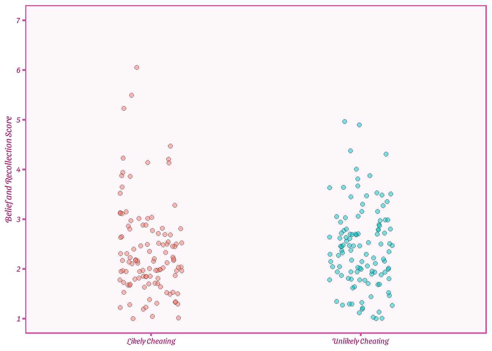
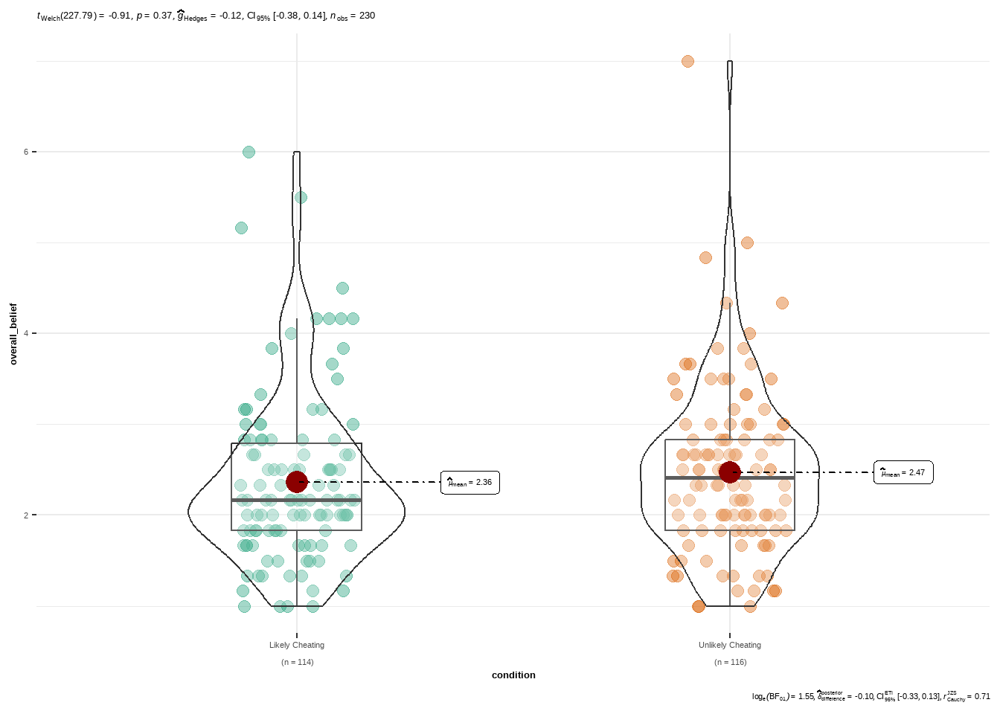
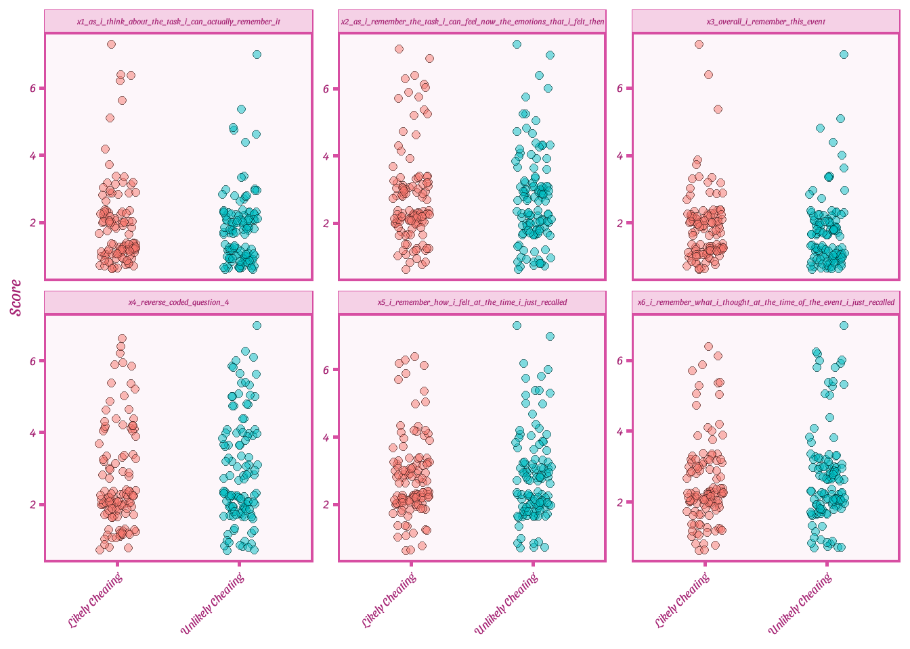
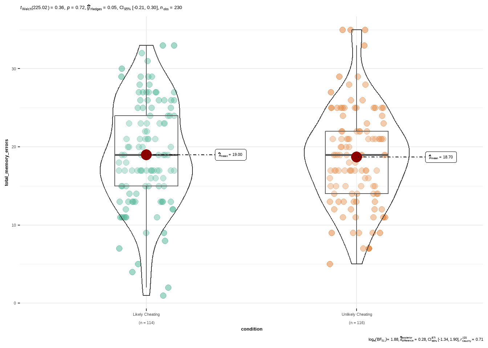

library(readxl)4 Real dataset
In the previous chapter, we learned how to install, load, and use R packages. These tools are essential for real-world data analysis, and now we will start applying them in practice.
In this chapter, we take the next step: working with a real dataset in R (download dataset here) We will learn how to import data, inspect its structure, clean and prepare it, and perform the first simple analyses. Working with real data is an important milestone because it brings together all the skills you’ve learned so far—creating variables, manipulating data, and using packages—in a practical research context.
By the end of this chapter, you will be able to:
import data from various sources (e.g., CSV, Excel)
inspect and explore a dataset to understand its structure
perform basic data cleaning and wrangling
run simple visualization, summaries, and initial analyses
These skills form the foundation for all subsequent chapters. Once you are comfortable importing and working with real datasets, you will be ready to move on to more advanced analyses and data visualizations.
4.1 Dataset
To start working with a real dataset, I will use my own data of my own study Registered Report: The effects of incentivized lies on memory. In this study, participants (n = 230) were randomly assigned to one of two conditions:
strong-incentive to cheat
weak-incentive to cheat
Participants completed an adapted Sequential Dyadic Die-Rolling paradigm, where they rolled a die and reported its outcome. Depending on the condition:
In the strong-incentive condition, lying helped participants avoid a financial penalty.
In the weak-incentive condition, lying produced a prosocial outcome (a benefit for an unknown other).
Two days later, participants completed two forms of memory assessment:
- Six questions from the Autobiographical Memory Questionnaire
- Each rated on a 7-point Likert scale- Memory for the die rolls
We will use this dataset to demonstrate the workflow for importing, viewing, and preparing data for analysis.
4.2 Load in data
To load the dataset, we first need the readxl package, which allows R to import Excel files:
Since the data is stored in an Excel .xlsx file, we will use read_xlsx() to import it:
df_original <- read_xlsx("Final Data Analysis.xlsx")New names:
• `Die Roll` -> `Die Roll...51`
• `Die Roll` -> `Die Roll...52`
• `Die Roll` -> `Die Roll...53`
• `Die Roll` -> `Die Roll...54`
• `Die Roll` -> `Die Roll...55`
• `Die Roll` -> `Die Roll...56`
• `Memory Errors` -> `Memory Errors...57`
• `Die roll color errors` -> `Die roll color errors...58`
• `Die Roll` -> `Die Roll...61`
• `Die Roll` -> `Die Roll...62`
• `Die Roll` -> `Die Roll...63`
• `Die Roll` -> `Die Roll...64`
• `Die Roll` -> `Die Roll...65`
• `Die Roll` -> `Die Roll...66`
• `Memory Errors` -> `Memory Errors...67`
• `Die roll color errors` -> `Die roll color errors...68`Tip:
It’s helpful to keep the imported dataset untouched under a name like df_original. This allows you to return to the clean version easily if mistakes happen during data cleaning or transformation.
4.3 Viewing the data
The first step in any data-analysis workflow is to inspect the imported dataset—both to confirm that it loaded correctly and to understand how it is structured.
You can open it in RStudio’s spreadsheet viewer using:
View(df_original)To preview only the first few rows:
head(df_original)# A tibble: 6 × 70
Status Progress Duration (in seconds…¹ Finished RecordedDate RecipientLastName
<chr> <chr> <chr> <chr> <chr> <chr>
1 Respo… Progress Duration (in seconds) Finished Recorded Da… Recipient Last N…
2 IP Ad… 100 238 True 44475.27119… <NA>
3 IP Ad… 100 397 True 44475.27834… <NA>
4 IP Ad… 100 232 True 44475.28124… <NA>
5 IP Ad… 100 426 True 44475.29065… <NA>
6 IP Ad… 100 403 True 44475.29385… <NA>
# ℹ abbreviated name: ¹`Duration (in seconds)`
# ℹ 64 more variables: RecipientFirstName <chr>, RecipientEmail <chr>,
# ExternalReference <chr>, DistributionChannel <chr>, UserLanguage <chr>,
# Q9_1 <chr>, Q9_2 <chr>, Q9_3 <chr>, Q9_4 <chr>, Q9_5 <chr>, Q9_6 <chr>,
# `Thrown Color ` <chr>, `Throw Estimation_1` <chr>,
# `Throw Estimation_2` <chr>, `Throw Estimation_3` <chr>,
# `Throw Estimation_4` <chr>, `Throw Estimation_5` <chr>, …At this stage, you may notice that:
- the dataset contains many columns not relevant for analysis
- many variable names contain spaces or special characters, which complicates coding
- To address this, we will clean the column names.
4.4 Cleaning column names
The janitor package provides a simple function, clean_names(), that automatically:
- removes spaces and special characters
- converts names to snake_case
- ensures names are syntactically valid
library(janitor)
df_original <- df_original %>%
clean_names()This is especially useful for survey data exported from platforms like Qualtrics, which often produce long and messy column names.
4.5 Removing inattentive participants
When inspecting the dataset, you may have noticed that it contains 243 rows, corresponding to 243 participants. However, the final sample reported in the article consists of 230 participants. The difference is due to the exclusion of participants who did not pass the attention checks.
The variable attention indicates how many attention checks each participant failed. Following the procedure described in the article, we exclude participants who failed more than three attention checks.
To keep the original dataset intact, we create a new dataset (df_analysis) using dplyr that excludes these participants:
# Create a new dataset while keeping the original data unchanged
df_analysis <- df_original %>%
dplyr::filter(attention <= 3)
# Check the number of remaining participants
nrow(df_analysis)[1] 230After this step, we are left with 230 rows (participants), which matches the sample size reported in the article.
4.6 Selecting relevant variables
Next, we select the variables needed for our analysis using dplyr, rename the fourth question:
library(dplyr)Warning: package 'dplyr' was built under R version 4.3.3df_analysis <- df_analysis %>%
select(participants,
condition,
subcondition_2,
x1_as_i_think_about_the_task_i_can_actually_remember_it,
x2_as_i_remember_the_task_i_can_feel_now_the_emotions_that_i_felt_then,
x3_overall_i_remember_this_event,
reverse_coded_question_4,
x5_i_remember_how_i_felt_at_the_time_i_just_recalled,
x6_i_remember_what_i_thought_at_the_time_of_the_event_i_just_recalled,
total_memory_errors)
df_analysis <- df_analysis %>%
rename(
x4_reverse_coded_question_4 = reverse_coded_question_4
)
head(df_analysis)# A tibble: 6 × 10
participants condition subcondition_2 x1_as_i_think_about_the_task_i…¹
<dbl> <chr> <chr> <dbl>
1 1 Unlikely Cheating Honest 1
2 2 Unlikely Cheating Lie 1
3 3 Likely Cheating Honest 3
4 4 Unlikely Cheating Honest 1
5 5 Unlikely Cheating Lie 1
6 6 Likely Cheating Lie 1
# ℹ abbreviated name: ¹x1_as_i_think_about_the_task_i_can_actually_remember_it
# ℹ 6 more variables:
# x2_as_i_remember_the_task_i_can_feel_now_the_emotions_that_i_felt_then <dbl>,
# x3_overall_i_remember_this_event <dbl>, x4_reverse_coded_question_4 <dbl>,
# x5_i_remember_how_i_felt_at_the_time_i_just_recalled <dbl>,
# x6_i_remember_what_i_thought_at_the_time_of_the_event_i_just_recalled <dbl>,
# total_memory_errors <dbl>In this study, they also created an overall belief score by averaging six individual memory and belief items which we can do with dplyr. We compute the overall belief score as the row-wise mean of the six relevant variables. Missing values are ignored using na.rm = TRUE.
# Create overall belief score
df_analysis <- df_analysis %>%
mutate(
overall_belief = rowMeans(
select(
.,
x1_as_i_think_about_the_task_i_can_actually_remember_it,
x2_as_i_remember_the_task_i_can_feel_now_the_emotions_that_i_felt_then,
x3_overall_i_remember_this_event,
x4_reverse_coded_question_4,
x5_i_remember_how_i_felt_at_the_time_i_just_recalled,
x6_i_remember_what_i_thought_at_the_time_of_the_event_i_just_recalled
),
na.rm = TRUE
)
)Then we can put this together in a searchable table using the package reactable:
library(reactable)
reactable(
df_analysis,
searchable = TRUE,
pagination = TRUE,
defaultPageSize = 5,
highlight = TRUE
)This allows readers to scroll, search, and browse the data directly in a clean table format.
4.7 Data visualization
Now that we have a cleaned dataset, we can start exploring it visually. Visualization is an essential step in data analysis because it allows us to understand patterns, spot outliers, and communicate results clearly.
4.7.1 Belief and recollection overall
First, we will visualize the overall belief and recollection scores. These scores combine responses from six memory questions. We use ggplot2 for flexible plotting:
library(ggplot2)
library(ThemePark)
# Plot
plot_belief <- ggplot(df_analysis, aes(x = condition, y = overall_belief, fill = condition)) +
geom_jitter(
width = 0.15,
alpha = 0.5,
size = 2,
shape = 21,
color = "black"
) +
scale_y_continuous(
limits = c(1, 7),
breaks = 1:7
) +
labs(
y = "Belief and Recollection Score",
x = NULL
) +
theme_barbie() +
theme(
legend.position = "none",
axis.text = element_text(size = 16),
axis.title.y = element_text(size = 18),
panel.grid = element_blank()
)
plot_belief
- geom_jitter spreads points horizontally so overlapping points are visible
- The plot shows individual participant scores as well as the overall pattern by condition
- theme_babie is from ThemePark where many other cool themes are available
You can also use ggstatsplot for plots with built-in statistical summaries:
library(ggstatsplot)
ggbetweenstats(
data = df_analysis,
x = condition,
y = overall_belief,
)
4.7.2 Belief and recollection individual
Sometimes, it’s useful to examine each question separately instead of combining them into a single overall score. To do this, we need to reshape the dataset from wide to long format.
In wide format, each participant has a single row, with responses to different questions stored in separate columns (e.g., x1 to x6). In long format, each row represents one participant’s response to a single question. As a result, each participant contributes multiple rows — one for each question.
Reshaping data in this way is typical when working with multilevel models (also called hierarchical linear models or linear mixed models), where each observation (row) represents a participant-item combination. Long-format datasets also make it easier to generate faceted plots, apply grouped summaries, or run analyses that consider responses at the item level.
R provides convenient functions for switching between formats: pivot_longer() converts wide data to long, and pivot_wider() converts long data back to wide. Mastering these functions allows you to easily manipulate your dataset depending on the type of analysis or visualization you want to perform.
In our dataset, reshaping to long format will result in six rows per participant — one for each question. Once in this format, we can create plots that show responses to each question across conditions, which provides a more detailed view of the data compared with the overall score.
library(tidyr)
df_long <- df_analysis %>%
pivot_longer(
cols = starts_with("x"),
names_to = "question",
values_to = "score"
)
head(df_long,12)# A tibble: 12 × 7
participants condition subcondition_2 total_memory_errors overall_belief
<dbl> <chr> <chr> <dbl> <dbl>
1 1 Unlikely Chea… Honest 11 1.17
2 1 Unlikely Chea… Honest 11 1.17
3 1 Unlikely Chea… Honest 11 1.17
4 1 Unlikely Chea… Honest 11 1.17
5 1 Unlikely Chea… Honest 11 1.17
6 1 Unlikely Chea… Honest 11 1.17
7 2 Unlikely Chea… Lie 22 1.33
8 2 Unlikely Chea… Lie 22 1.33
9 2 Unlikely Chea… Lie 22 1.33
10 2 Unlikely Chea… Lie 22 1.33
11 2 Unlikely Chea… Lie 22 1.33
12 2 Unlikely Chea… Lie 22 1.33
# ℹ 2 more variables: question <chr>, score <dbl>Now, each participant has six rows — one per question — making it easy to create faceted plots:
ggplot(df_long, aes(x = condition, y = score, fill = condition)) +
geom_jitter(width = 0.15, alpha = 0.5, size = 2, shape = 21, color = "black") +
facet_wrap(~question,
scales = "free_y") +
labs(y = "Score",
x = NULL) +
theme_barbie(base_size = 14) +
theme(legend.position = "none",
axis.text.x = element_text(angle = 45,
hjust = 1))Warning in plot_theme(plot): The `base_size` theme element is not defined in
the element hierarchy.
- Each panel corresponds to one question
scales = "free_y"allows each question’s responses to use its own y-axis, making patterns easier to see
4.7.3 Memory errors
For completeness, we can visualize the total memory errors:
ggbetweenstats(
data = df_analysis,
x = condition,
y = total_memory_errors,
)
4.8 Data analysis
After exploring the data visually, the next step is to summarize and analyze it quantitatively. A common first step in any analysis workflow is to examine descriptive statistics, which help us understand the overall patterns in the data, detect potential issues, and prepare for more advanced analyses.
4.8.1 Descriptive statistics
In the following code, we will extract the sample size, mean, and standard deviation per group for all variables of interest in our dataset.
library(dplyr)
library(tidyr)
# Specify the numeric variables you want to summarize
numeric_vars <- c(
"x1_as_i_think_about_the_task_i_can_actually_remember_it",
"x2_as_i_remember_the_task_i_can_feel_now_the_emotions_that_i_felt_then",
"x3_overall_i_remember_this_event",
"x4_reverse_coded_question_4",
"x5_i_remember_how_i_felt_at_the_time_i_just_recalled",
"x6_i_remember_what_i_thought_at_the_time_of_the_event_i_just_recalled",
"total_memory_errors",
"overall_belief"
)
# Summary table
summary_table <- df_analysis %>%
group_by(condition) %>%
summarise(
N = n(),
across(
all_of(numeric_vars),
list(
Mean = ~mean(.x, na.rm = TRUE),
SD = ~sd(.x, na.rm = TRUE)
),
.names = "{.col}_{.fn}"
),
.groups = "drop"
)
# View table
summary_table# A tibble: 2 × 18
condition N x1_as_i_think_about_the_task_…¹ x1_as_i_think_about_…²
<chr> <int> <dbl> <dbl>
1 Likely Cheating 114 1.89 1.25
2 Unlikely Cheating 116 1.84 1.04
# ℹ abbreviated names:
# ¹x1_as_i_think_about_the_task_i_can_actually_remember_it_Mean,
# ²x1_as_i_think_about_the_task_i_can_actually_remember_it_SD
# ℹ 14 more variables:
# x2_as_i_remember_the_task_i_can_feel_now_the_emotions_that_i_felt_then_Mean <dbl>,
# x2_as_i_remember_the_task_i_can_feel_now_the_emotions_that_i_felt_then_SD <dbl>,
# x3_overall_i_remember_this_event_Mean <dbl>, …Each row corresponds to a condition
Nis the number of participants per condition.Columns ending with
_Meanor_SDshow the mean and standard deviation for each variable.Optional: For an interactive table in an HTML document or Shiny app, you can use reactable:
reactable(summary_table)
4.8.2 Internal consistency reliability
In the article, they conducted several analyses such as assessing the internal consistency among the AMQ score via Cronbach’s alpha and McDonald’s Omega. We can easily do this in R:
items <- df_analysis %>%
select(
x1_as_i_think_about_the_task_i_can_actually_remember_it,
x2_as_i_remember_the_task_i_can_feel_now_the_emotions_that_i_felt_then,
x3_overall_i_remember_this_event,
x4_reverse_coded_question_4,
x5_i_remember_how_i_felt_at_the_time_i_just_recalled,
x6_i_remember_what_i_thought_at_the_time_of_the_event_i_just_recalled
)
alpha_result <- psych::alpha(items)
alpha_result$total$raw_alpha[1] 0.8331445omega_result <- psych::omega(items, nfactors = 1)
omega_result$omega_h[1] 0.84140394.9 Inferential statistics
We now turn to testing our main hypotheses:
Belief and recollection scores: Participants in the strong-incentive to cheat condition (Likely Cheating) are expected to have lower belief and recollection scores than those in the weak-incentive condition (Unlikely Cheating).
Memory errors: Participants in the strong-incentive condition are expected to have more memory errors than those in the weak-incentive condition.
We will examine these hypotheses using both Bayesian and frequentist methods.
4.9.1 Belief and recollection scores
4.9.1.1 Bayesian t-test (directional)
library(BayesFactor)
bf_belief <- ttestBF(
x = df_analysis$overall_belief[df_analysis$condition=="Unlikely Cheating"],
y = df_analysis$overall_belief[df_analysis$condition=="Likely Cheating"],
prior = "medium",
nullInterval = c(-Inf, 0) # directional test: strong-incentive < weak-incentive
)
bf_beliefBayes factor analysis
--------------
[1] Alt., r=0.707 -Inf<d<0 : 0.0805335 ±0%
[2] Alt., r=0.707 !(-Inf<d<0) : 0.3441747 ±0%
Against denominator:
Null, mu1-mu2 = 0
---
Bayes factor type: BFindepSample, JZS4.9.1.2 Frequentist t-test
# Frequentist t-test for belief scores
ttest_belief <- t.test(
x = df_analysis$overall_belief[df_analysis$condition=="Unlikely Cheating"],
y = df_analysis$overall_belief[df_analysis$condition=="Likely Cheating"],
paired = FALSE,
var.equal = FALSE,
alternative = "greater"
)
ttest_belief
Welch Two Sample t-test
data: df_analysis$overall_belief[df_analysis$condition == "Unlikely Cheating"] and df_analysis$overall_belief[df_analysis$condition == "Likely Cheating"]
t = 0.90671, df = 227.79, p-value = 0.1828
alternative hypothesis: true difference in means is greater than 0
95 percent confidence interval:
-0.09046978 Inf
sample estimates:
mean of x mean of y
2.472701 2.362573 4.9.1.3 Effect size
effectsize::effectsize(ttest_belief)Cohen's d | 95% CI
------------------------
0.12 | [-0.10, Inf]
- Estimated using un-pooled SD.
- One-sided CIs: upper bound fixed at [Inf].4.9.2 Memory errors
4.9.2.1 Bayesian t-test (directional)
library(BayesFactor)
bf_mem <- ttestBF(
x = df_analysis$total_memory_errors[df_analysis$condition=="Unlikely Cheating"],
y = df_analysis$total_memory_errors[df_analysis$condition=="Likely Cheating"],
prior = "medium",
nullInterval = c(-Inf, 0) # directional test: strong-incentive < weak-incentive
)
bf_memBayes factor analysis
--------------
[1] Alt., r=0.707 -Inf<d<0 : 0.1943251 ±0%
[2] Alt., r=0.707 !(-Inf<d<0) : 0.1116454 ±0%
Against denominator:
Null, mu1-mu2 = 0
---
Bayes factor type: BFindepSample, JZS4.9.2.2 Frequentist t-test
# Frequentist t-test for memory scores
ttest_mem <- t.test(
x = df_analysis$total_memory_errors[df_analysis$condition=="Unlikely Cheating"],
y = df_analysis$total_memory_errors[df_analysis$condition=="Likely Cheating"],
paired = FALSE,
var.equal = FALSE,
alternative = "greater"
)
ttest_mem
Welch Two Sample t-test
data: df_analysis$total_memory_errors[df_analysis$condition == "Unlikely Cheating"] and df_analysis$total_memory_errors[df_analysis$condition == "Likely Cheating"]
t = -0.35574, df = 225.02, p-value = 0.6388
alternative hypothesis: true difference in means is greater than 0
95 percent confidence interval:
-1.702606 Inf
sample estimates:
mean of x mean of y
18.69828 19.00000 4.9.2.3 Effect size
effectsize::effectsize(ttest_mem)Cohen's d | 95% CI
------------------------
-0.05 | [-0.26, Inf]
- Estimated using un-pooled SD.
- One-sided CIs: upper bound fixed at [Inf].4.10 Summary
In this chapter, we worked through a complete analysis workflow using a real research dataset, showing how to import, clean, and prepare data for analysis in R. We explored the data visually, created composite scores, examined reliability, and extracted descriptive statistics before testing the main hypotheses using both frequentist and Bayesian methods. Together, these steps demonstrate how raw data are transformed into interpretable results and provide a solid foundation for the more advanced analyses introduced in the next chapter.
4 Real dataset – Introduction to R for Data Analysis 4 Real dataset – Introduction to R for Data Analysis 4 Real dataset – Introduction to R for Data Analysis Introduction to R for Data Analysis